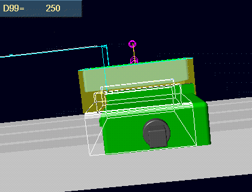

Technical Marketing MS5 Vignettes - VGx in Generative Machining
This VGx example shows how VGx can be used in Generative Machining to
assist the production engineer.
Model file :- VGx_Gen_Mach.mf*
Before

After

Begin vignette


Animate the current tool path.



First turn ON the Variational Features vgon or /mo qery vg on.
Drag the dimension that goes down the table. NOTE :- It make take some seconds to
load the network, so be prepared to talk.
Make the vice center on the machined part, distance 250mm.


Drag the dimension that between the vice jaws. NOTE :- It make take some
seconds to load the network, so be prepared to talk.
Make the distance 50mm.
Tech Tips
Turn Vartiational Features on with global symbol vgon and off with vgof.